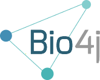
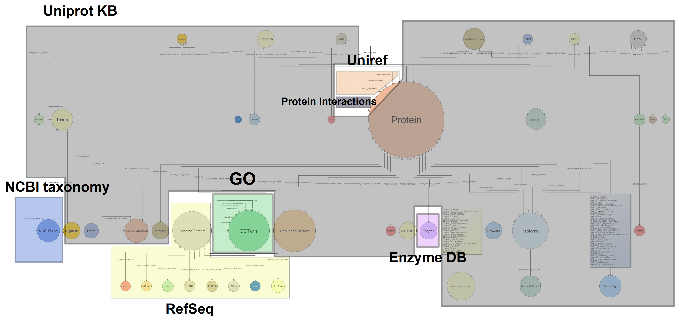

Bio4j: графовая база данных
Алексей Алехин
29 июля 2014



Что такое Bio4j?
Bio4j — это биоинформатическая графовая база данных, содержащая информацию связанную с протеинами из самых крупных открытых источников
Открытость!

- Исходники распространяются под лицензией AGPLv3
- Интегрированны только открытые данные (Open Data)
- Процесс разработки на GitHub абсолютно прозрачен
Базы данных в биологии
- Огромный объем взаимосвязанной и
пересекающейся информации
- распределённой по разным источникам
- и хранящейся в реляционных базах данных,
а иногда даже просто в CSV файлах
Это может быть приемлемо в простых задачах, но когда количество разнородной информации увеличивается,
модель данных становится слишком сложной

Это реальная схема базы данных GO
Реляционная модель
В реляционной модели отношение
Сущность ⇔ Таблица
не является взаимным, что порождает
- вспомогательные таблицы
- искуственные идентификаторы
- работу с таблицами представляющими
связи, вместо работы с самими связями
Биология ≠ Таблица
- Возможно, биологическая
информация не на на 100% граф
- но уж точно не набор таблиц!
Графовые базы данных
- Данные хранятся в соответствии
со своей семантической структурой
- Простота интеграции новых данных
ведёт к масштабируемости
- Локальные индексы (vertex-centric)
позволяют избежать проблем с вершинами,
которые имеют слишком большое
количество связей (supernode problem)
Облачные технологии

Data as a Service
- Удобное взаимодействие
между сервисами
- Безопасное хранение
любого объема данных
- Масштабируемость
- Рентабельность
Bio4j
=
Биологические данные
+
Графовые БД
+
Облако
Модель данных Bio4j
- 2 × 108 вершин 40 типов
- 109 связей 150 типов
- 6 × 108 свойств (аттрибутов)

Структура Bio4j
Интегрированные данные имеют модульную структуру,
позволяющую выделить только интересующие части

Как Bio4j используется в Era7
- BG7 — система аннотации бактериальных геномов
- MG7 — система метагеномного анализа
- Сравнительная геномика, анализ сетей взаимодействия белков, сборка геномов и т.д.
Другие пользователи Bio4j
Ohio State University
- Интеграция и анализ Chip-seq данных
- Моделирование геномной информации
и регуляторных генетических сетей
Berkeley Phylogenomics Group
- Графовая БД для геномного анализа
разработанная на основе Bio4j
Внутреннее устройство Bio4j
- Абстрактная модель данных с чёткой типизацией
- Универсальная реализация с помощью Blueprints
- Конкретные реализации:
Различная топология графов на уровне хранилища,
но единая модель данных в пользовательском коде
Немного технических деталей
- Исходный код на Java и Scala
- Statika для модульной системы
- SBT для автоматизации
сборки кода, тестирования и релизов
- Git + Github для совместной работы
и координации всего рабочего процесса

{kind=link}